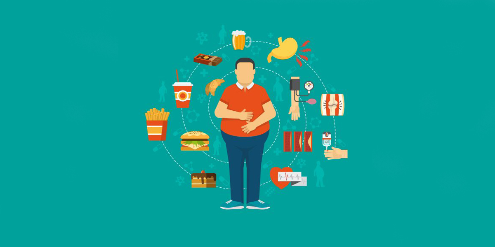

Índice de Massa Corporal (IMC) e sua Importância para a Saúde
O Índice de Massa Corporal, popularmente conhecido como IMC, é uma medida amplamente utilizada para avaliar se uma pessoa está dentro de um peso saudável em relação à sua altura. Ele é calculado dividindo o peso da pessoa (em quilogramas) pelo quadrado da sua altura (em metros). A fórmula matemática para calcular o IMC é: IMC = peso/(altura*altura). O resultado obtido com essa fórmula é um número que pode ser interpretado de acordo com as seguintes faixas:
| IMC | Situação |
|---|---|
| Abaixo de 18,5 | Abaixo do peso |
| 18,5 - 24,9 | Peso normal |
| 25 - 29,9 | Sobrepeso |
| 30,0 - 34,9 | Obesidade 1 |
| 35,0 - 39,9 | Obesidade 2 |
| 40,0 ou mais | Obesidade 3 |
Consequências do Peso Elevado
Manter um peso saudável é essencial para o bem-estar físico e emocional. O sobrepeso e a obesidade estão associados a uma série de problemas de saúde, incluindo:
1. Doenças Cardiovasculares: O excesso de peso pode aumentar o risco de doenças do coração, como hipertensão arterial, doença arterial coronariana e acidente vascular cerebral (AVC).
2. Diabetes Tipo 2: A obesidade é um fator de risco significativo para o desenvolvimento de diabetes tipo 2, uma condição crônica que afeta a forma como o corpo metaboliza o açúcar.
3. Problemas Articulares: O peso extra coloca pressão adicional sobre as articulações, o que pode levar ao desenvolvimento de osteoartrite e outras condições dolorosas.
4. Distúrbios Respiratórios: A obesidade está relacionada a distúrbios respiratórios, como apneia do sono, que podem prejudicar a qualidade do sono e a saúde respiratória.
5. Problemas Psicológicos: O peso elevado também pode impactar a saúde mental, causando baixa autoestima, depressão e ansiedade.
Gerenciando o Peso e Promovendo a Saúde
Dieta Balanceada
Uma alimentação saudável, rica em frutas, vegetais, grãos integrais e proteínas magras, pode ajudar a controlar o peso e fornecer os nutrientes necessários para o corpo.
Exercício Regular
A prática regular de atividades físicas, como caminhada, corrida, natação ou musculação, é fundamental para manter um peso saudável e fortalecer o corpo.
Consultas Médicas Regulares
Realizar check-ups médicos regularmente pode ajudar a monitorar o peso e identificar precocemente quaisquer problemas de saúde relacionados ao excesso de peso.
Suporte Social
Buscar apoio de amigos, familiares ou grupos de apoio pode ser fundamental para manter a motivação e o comprometimento com um estilo de vida saudável.